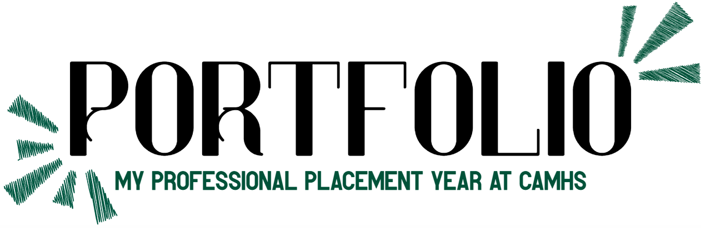

In my third year of my Psychology undergraduate degree at Sussex University, I completed a sandwich placement year at Brighton and Hove Child and Adolescent Mental Health Services (CAMHS).
Structure of my placement
Within Brighton CAMHS, there are four pathways:
Depression and Anxiety Pathway (DAP)
which assesses and treats young people with depression, anxiety, or OCD
Trauma Pathway
which assesses and treats young people with PTSD symptoms
Emotional Intensity Pathway
which provides DBT (Dialectical Behavioural Therapy). Learn more about DBT here
Neurodevelopmental Pathway
which assesses young people for Autism Spectrum Condition (ASC) and ADHD
Participation Team
In addition to the four pathways, I was also involved in the Sussex-wide Participation team, which encourages Experts by Experience to be involved in decisions regarding how CAMHS is run.
Skills I developed